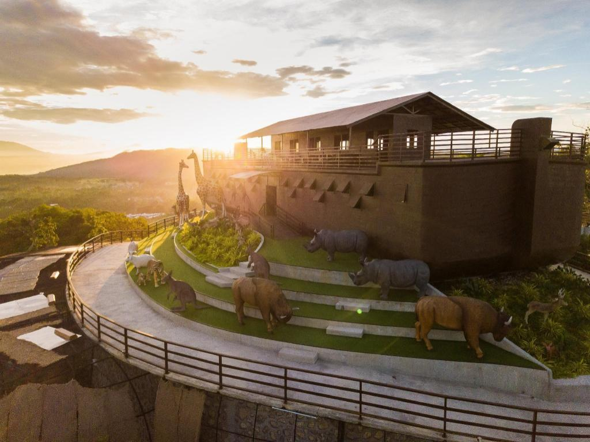
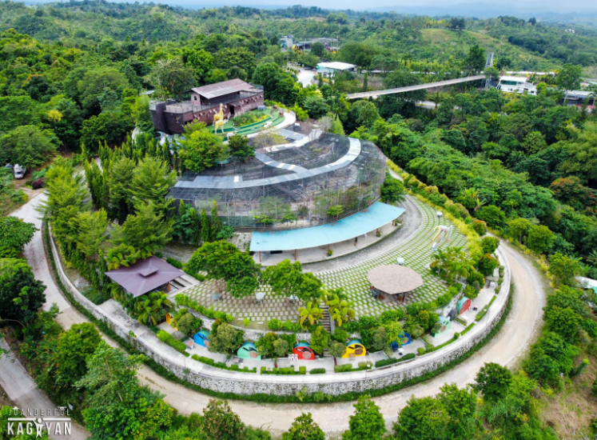
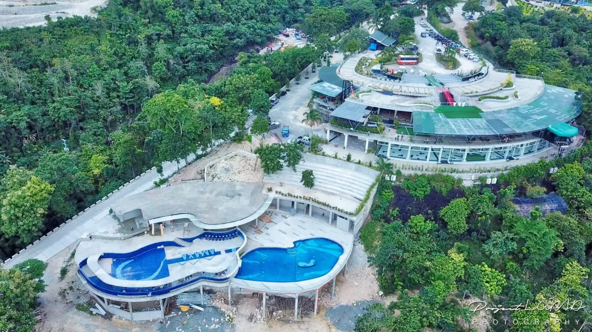

Indahag in Cagayan de Oro City is a scenic hilltop destination famous for its cool breeze and panoramic city views. Its top attraction is Amaya View, a mountain resort featuring an infinity pool, an aviary, and thrill rides like paragliding. For a more relaxed vibe, you can catch the sunset at Eden's Solace, take photos at Higala Ridge, or trek to Indahag’s hidden waterfalls. Located just 20 minutes from the city center, it is a perfect quick escape for nature lovers and adventure seekers alike.


